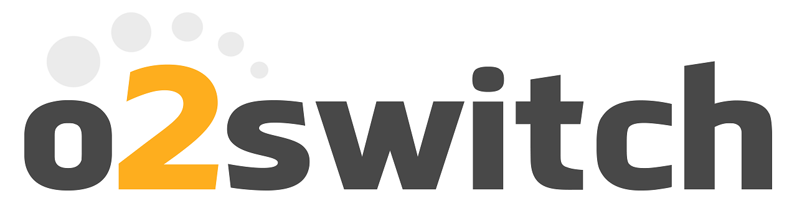
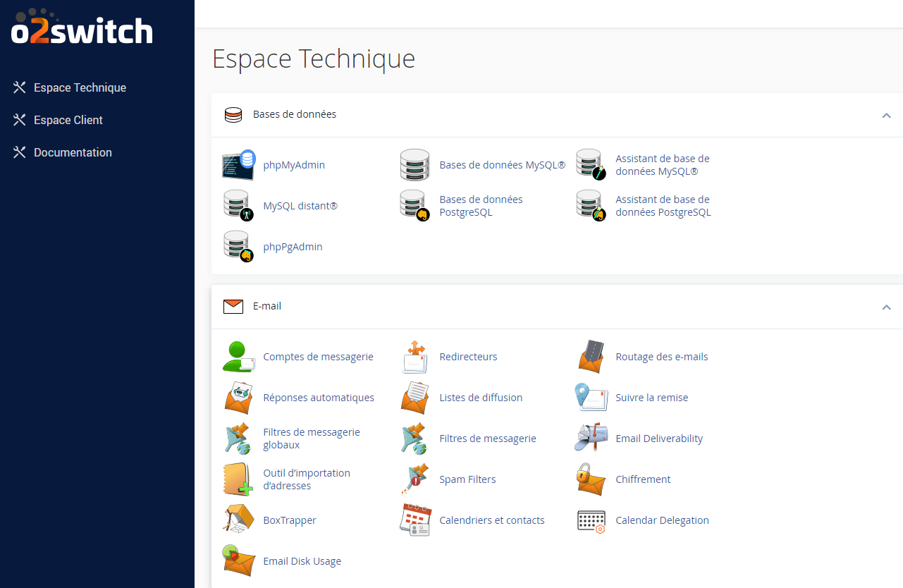
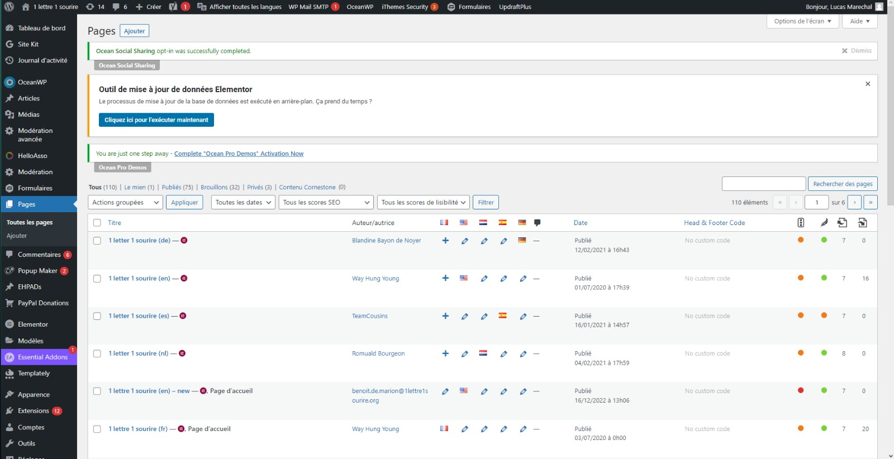
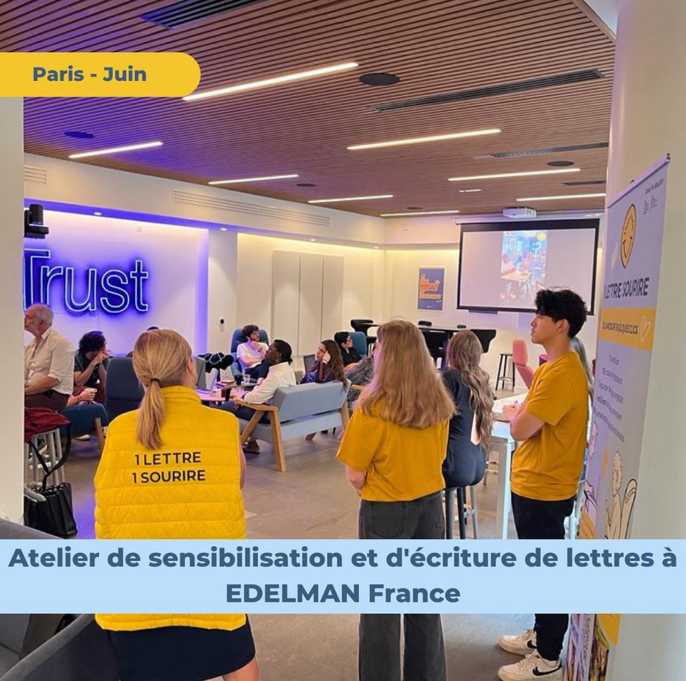

Outils Utilisés
Gmail
Gmail est une plateforme de messagerie de Google permettant la gestion des emails avec efficacité au sein de l'entreprise.

o2switch
o2switch est un fournisseur d'hébergement web français offrant des solutions robustes pour le déploiement de sites web.
Espace Technique o2switch
WordPress
WordPress est un système de gestion de contenu gratuit et open source utilisé pour créer et gérer des sites web facilement.
Interface WordPress
Atelier
Atelier de sensibilisation chez Edelman
Nous nous sommes rendus chez Edelman pour partager notre mission et notre travail. Ces visites nous ont permis d'étendre notre réseau de partenaires et de sensibiliser davantage de personnes à notre cause.
